Publik · Bagian berandaHero, sambutan, layanan, tentang, kabar, agenda, dan footer.Buka ukuran penuh ↗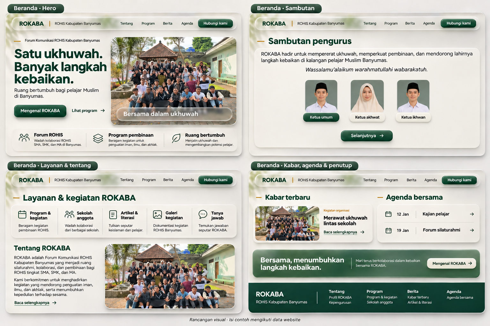
Publik · Profil dan programProfil, misi, sejarah, pengurus, divisi, dan program kerja.Buka ukuran penuh ↗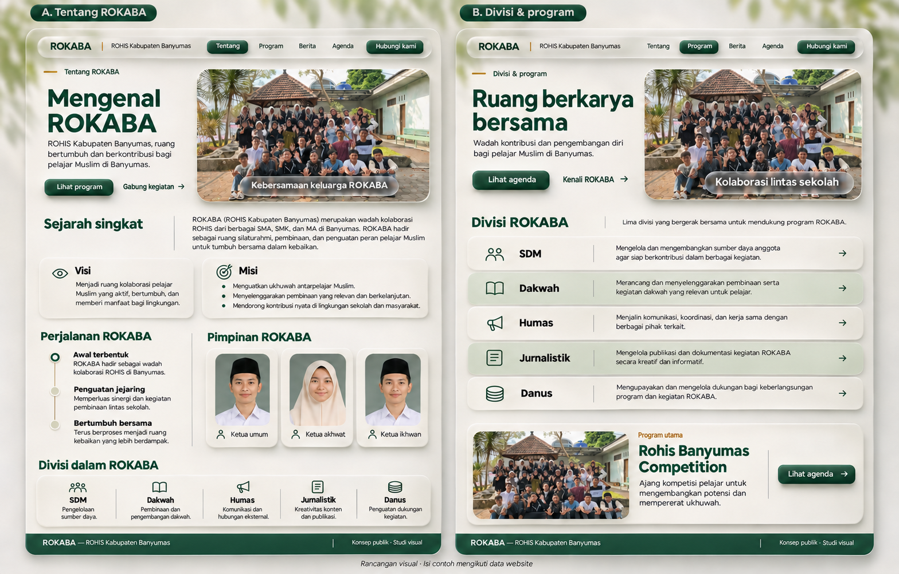
Publik · Berita dan artikelDaftar serta halaman detail berita dan artikel.Buka ukuran penuh ↗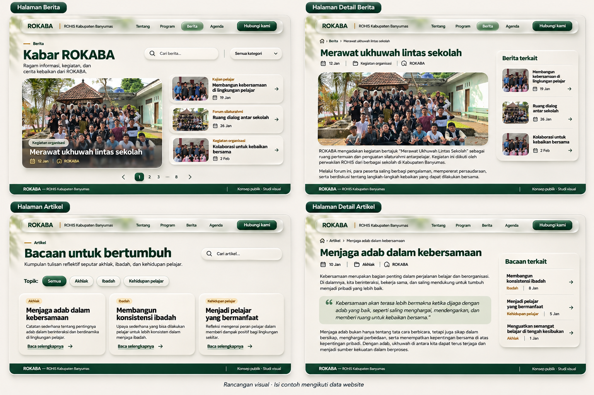
Publik · LayananAgenda, sekolah anggota, galeri, kontak, dan tanya jawab.Buka ukuran penuh ↗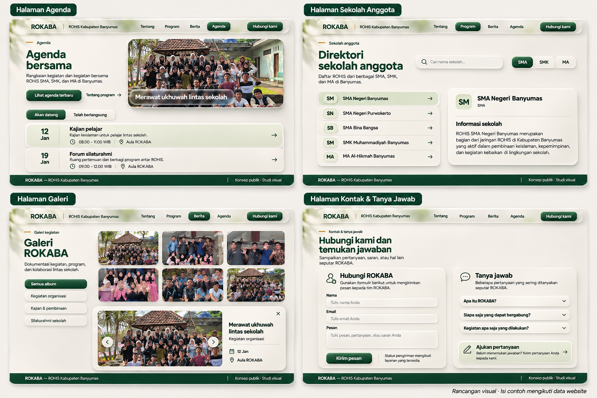
Admin · Ringkasan dan masukDashboard dan formulir masuk sesuai alur yang ada.Buka ukuran penuh ↗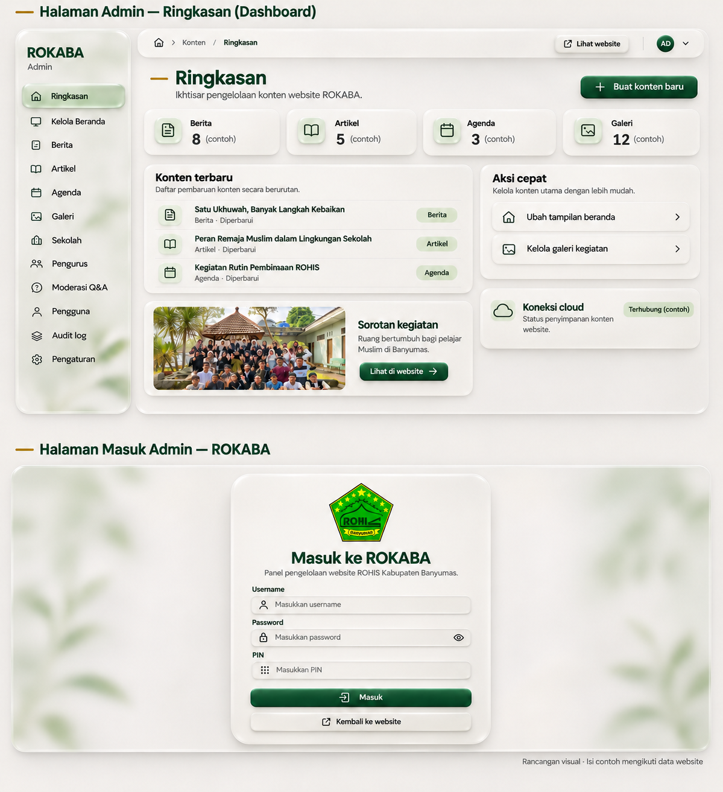
Admin · Editor beranda AHero, sambutan, tentang kami, divisi dan program.Buka ukuran penuh ↗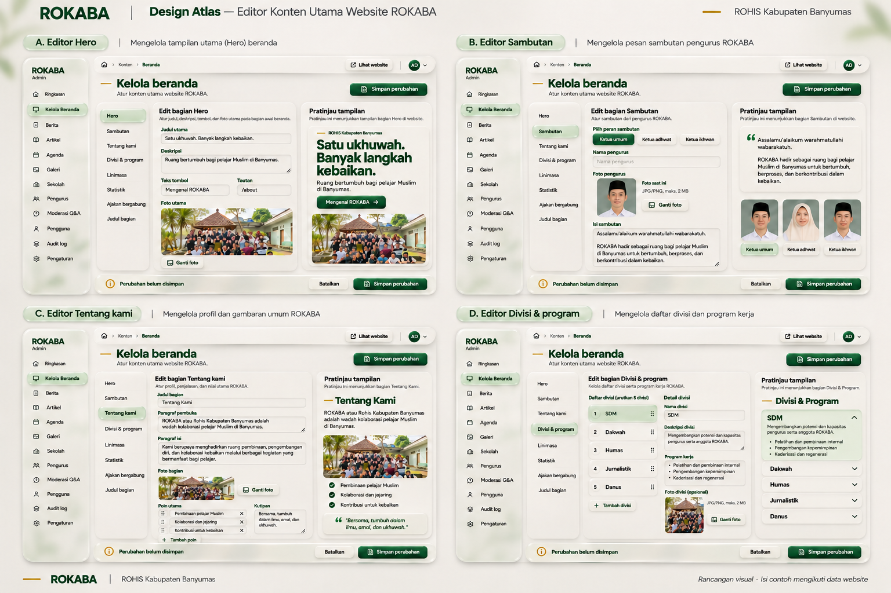
Admin · Editor beranda BLinimasa, statistik, ajakan bergabung, judul bagian.Buka ukuran penuh ↗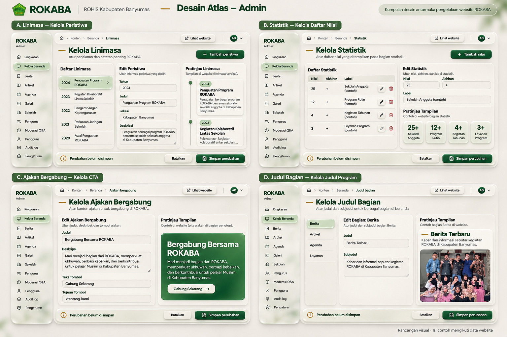
Admin · Direktori dan moderasiSekolah, pengurus, dan jawaban pertanyaan.Buka ukuran penuh ↗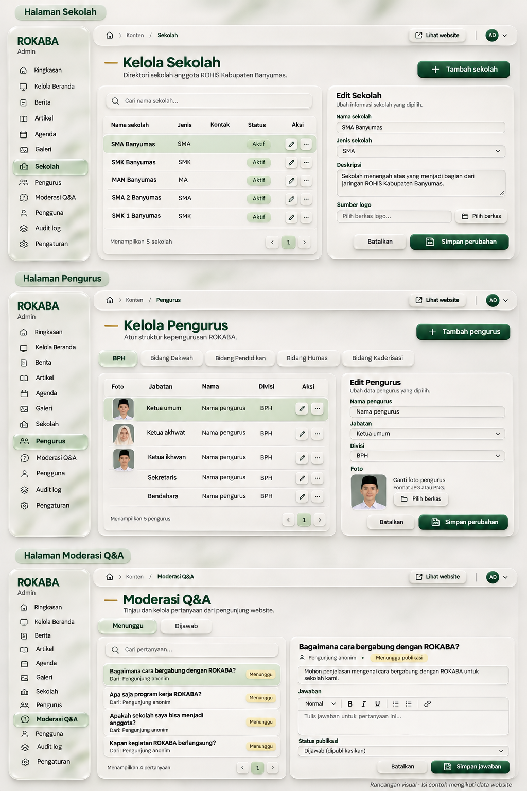
Admin · Pengaturan sistemPengguna, audit log, pengaturan, serta cadangan data.Buka ukuran penuh ↗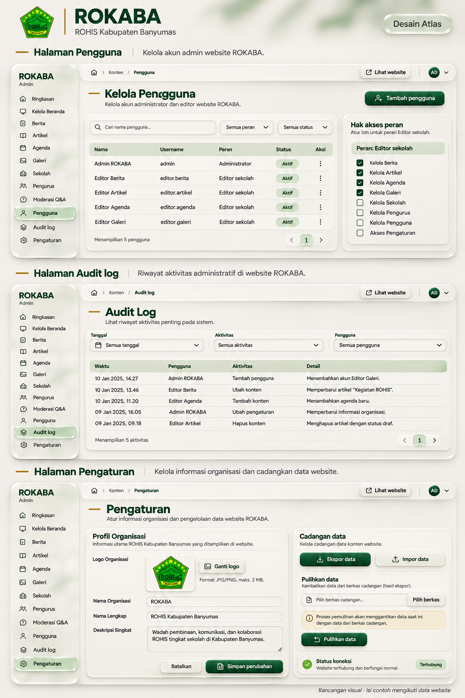
HP · Layanan dan navigasiAgenda, sekolah, galeri, kontak, tanya jawab, menu.Buka ukuran penuh ↗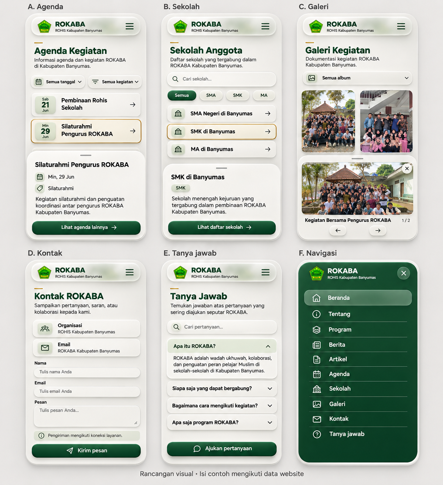
HP · Panel adminRingkasan, edit beranda, daftar konten, dan jawab pertanyaan.Buka ukuran penuh ↗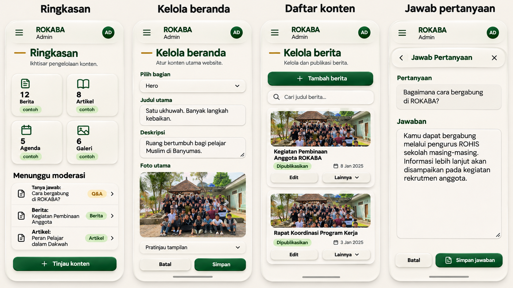
Dialog dan komponenModal, konfirmasi, status, formulir, dan bahan permukaan.Buka ukuran penuh ↗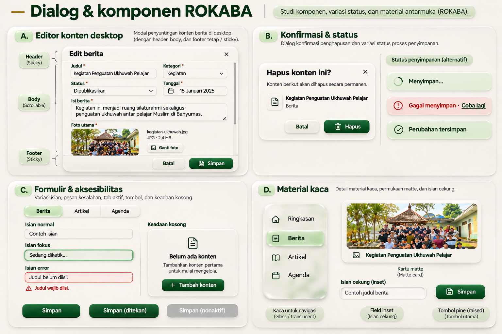